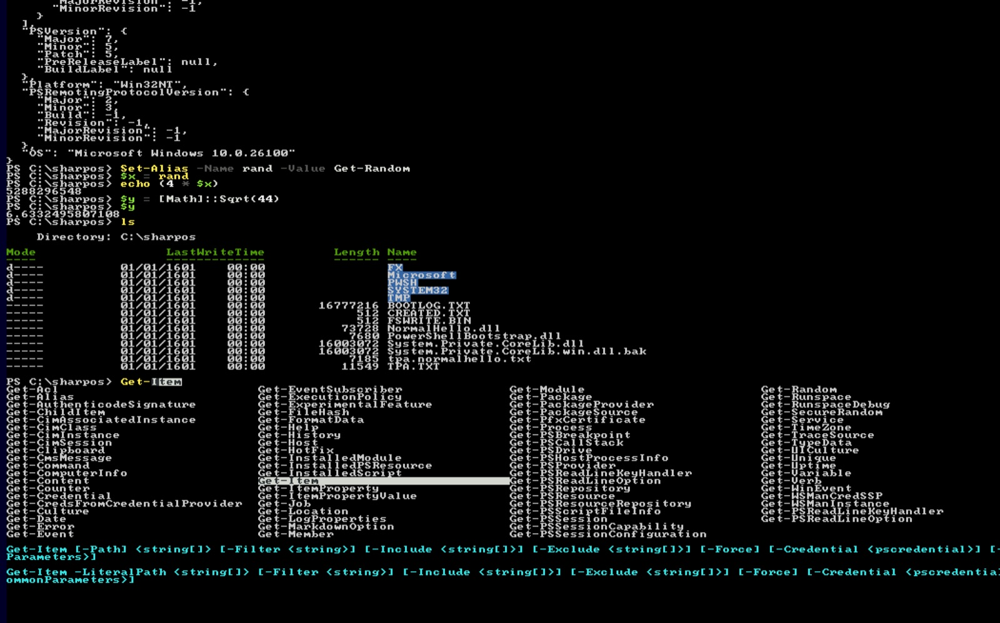
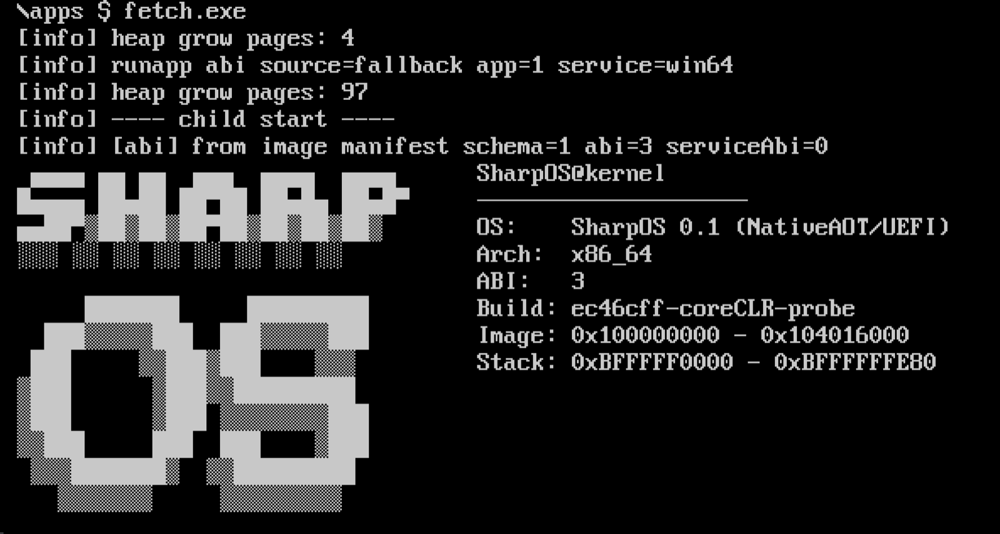

Every line of source is C#, even the parts you would normally write in assembly.
MSBuild and PowerShell only orchestrate the build. Interrupt handlers, write barriers, interface dispatch trampolines, reading CR3: each is solved one of three ways.
Tiers 0 and 1, the kernel and every native app, contain zero lines of C, C++ or assembly. The only exception is Tier 2: stock PowerShell needs a JIT and reflection, so it runs on an optional CoreCLR fork, which is C++ and is not required to build or boot the system.
As far as we know, no other managed OS holds this invariant: Cosmos drops to X#, its own assembler dialect, for the lowest layer, and Singularity kept its bootstrap and HAL in C++ and assembly. If a task looks impossible in C#, it has been framed wrong.
Plain C#
[RuntimeExport], [UnmanagedCallersOnly], delegate* unmanaged, fixed, pointer arithmetic.
Iced assembler, at build time and at runtime
A source generator bakes 16 early-boot stubs into byte templates. Once the heap is up, Iced is called directly.
var a = new Assembler(64);
a.mov(rax, rcx);
a.Assemble(writer, rip);COFF objects without a line of C
When the linker needs a symbol ILC does not emit, an MSBuild task generates the .obj itself.
[BootAsm.CoffDataSymbol(
"__security_cookie",
Section = ".data")]
public static ulong SecurityCookie
= 0x2B992DDFA232UL;Three execution tiers
From bare metal up to stock .NET assemblies loaded byte-for-byte. A unikernel: one address space, its own scheduler, its own GC.
Kernel-AOT
Kernel, boot, drivers, scheduler. Direct access to CR3, PCI, MMIO, IDT, local APIC.
- Lives in
- OS/
- Built with
- NativeAOT + NoStdLib + MinimalRuntime
PE app
Freestanding apps: launcher, shell, DOOM, NES emulators. Each one gets its own collector and heap.
- Lives in
- apps_native/
- Built with
- NativeAOT + NoStdLib + shared SDK
CoreCLR-hosted
Stock .NET DLLs, byte-for-byte: JIT, reflection, the full BCL. This is how PowerShell runs.
- Lives in
- \sharpos\*.dll on FAT
- Built with
- optional CoreCLR fork (C++), linked into the kernel
Not a hello world: PowerShell and DOOM on bare metal.
The toughest tests of the whole stack at once: TPL, exceptions, reflection, GC, FAT32, ANSI console, framebuffer.

PowerShell 7.6.5
Stock pwsh boots from FAT32 to an interactive prompt and runs real cmdlets. PSReadLine works fully: colors, Tab completion, history, Ctrl+C.
DOOM
ManagedDoom built as a PE app on our own std. The WAD is read from FAT32, frames go out via GOP at 2× scale, PS/2 keyboard input, 35 Hz off the HPET.

A whole environment
A Terminal.Gui launcher, a bash-syntax shell with history, up to 16 processes via Process.Start, a FAT32 driver that writes, an xHCI USB stack, NES emulators. The whole set, kernel, shell, apps, pipes and CoreCLR with PowerShell, is tested on a real laptop, and the full probe suite passes there.
Programs pass objects, not bytes.
PIPEGEN | PIPEFILT 3 | PIPECNT works just like in bash, but every stage receives a real object with fields. It lives in shared exchange memory: no parsing, no copying into the receiver's heap.
Both PIPESPY stages report the same address: one object flows through four programs without being copied.
- Zero allocations per messageCopy, forward, read in place. On a 100-object graph it is 5–6× faster than
BinaryWriter+BinaryReader. - Queries right in the pipelineKusto Query Language over a message stream:
where,summarize,extend,project. The query binds before the first data arrives. - One attribute and a type can travelMark a type with
[Message]and it can be read, filtered and written back without a copy.Pipe.Read<LogEntry>() .Where(e => e.Level >= min) .WriteTo(); // zero-copy - JSON, JSON Lines, CBOR
CONVERTis fully streaming with one message in memory: a 100 MiB file passes through a 64 MiB heap.
What works today
Every “works” mark is confirmed by in-kernel probe runs. The full matrix with notes lives in the README.
| Feature | Kernel-AOT | PE app | CoreCLR |
|---|---|---|---|
| Managed heap, GC with precise stack scanning | works | works | works |
try / catch / finally / when filters | works | works | works |
async / await, yield return, lambdas | works | works | works |
| BCL collections, LINQ | works | works | works |
Task.Run, lock, multithreaded processes | works | works | works |
Correctly rounded Math (SharpLibm, CORE-MATH) | works | works | partial |
dynamic | not yet | partial | works |
| Reflection | not yet | not yet | works |
| USB (xHCI): keyboard, flash drives, U2F hardware key | partial | partial | not applicable |
| Preemptive multitasking | partial | partial | partial |
| SMP | planned | planned | planned |
| Networking | not yet | not yet | not yet |
Build it yourself
It builds with a plain dotnet publish -r win-x64. mise or nix installs the toolchain, and the image boots in QEMU.
- Install mise or nix. Every tool version is pinned in
mise.tomlandflake.lock. - Clone with submodules. The CoreCLR fork is optional; skip it with
-SkipCoreClr. - Build and run.
run_build.ps1builds the kernel, makes the image and launches QEMU. - Drop in payloads. DOOM1.WAD,
.nescartridges and PowerShell go intopayloads/.
# macOS / Linux / Windows
# or on Windows: winget install jdx.mise
brew install mise
git clone --recurse-submodules \
https://github.com/daniilvaino/SharpOS.git
cd SharpOS
mise trust && mise bootstrap
mise exec -- pwsh
# then, in PowerShell
./build.ps1 launcher
$env:SHARPOS_GUI = 1
./run_build.ps1 -UsbOnly -SkipCoreClr# NixOS or any Linux with flakes enabled
git clone --recurse-submodules \
https://github.com/daniilvaino/SharpOS.git
cd SharpOS
nix develop --command pwsh
# then, in PowerShell
./build.ps1 launcher
$env:SHARPOS_GUI = 1
./run_build.ps1 -UsbOnly -SkipCoreClrLibraries and inspiration
Third-party code that ships in the image, and the projects SharpOS learned from.
- zerosharporigin
A UEFI hello world on NativeAOT, where it all began. - dotnet/runtimeMIT
NativeAOT toolchain, the CoreCLR fork, hundreds of BCL ports. - IcedMIT
x86-64 encoder: every bit of assembly in the project. - ManagedDoomGPL-2.0
DOOM in C#, isolated in its own app. - Terminal.GuiMIT
Text UI toolkit the launcher is built on. - XtermSharpMIT
Terminal emulator engine: ANSI/VT, scrollback. - Kusto.LanguageApache-2.0
KQL parsing and binding for pipeline queries. - Cosmosidea
The very idea of a managed operating system. Its lowest layer is written in X#, an assembler dialect, so it does not hold the all-C# invariant.
C# from the first instruction to DOOM.
SharpOS is public domain under CC0. Use it, change it, send pull requests.